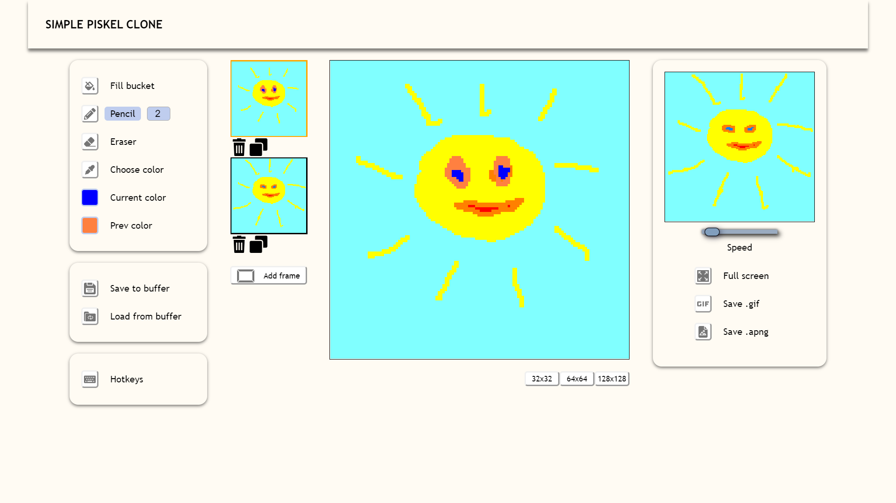
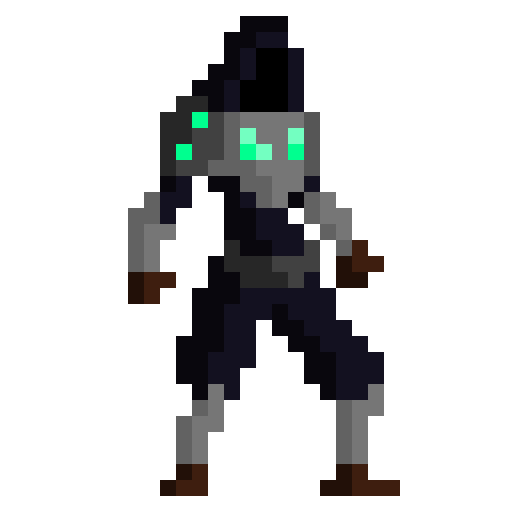

Piskel is a free online editor for animated sprites & pixel art
Create animations in your browser.
Create Sprite

Example sprites
Here are some examples of sprites.

Create animations in your browser.
Create SpriteHere are some examples of sprites.